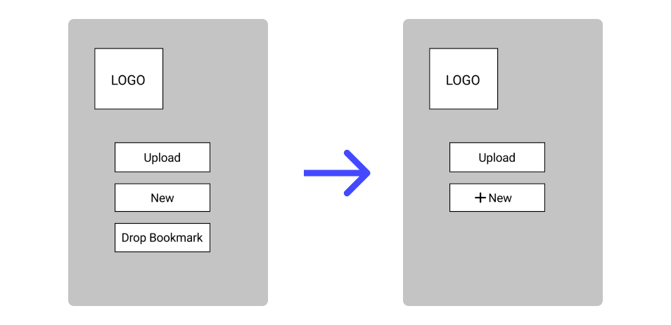

Design Role
- UX Research
- UX Design
- Visual Design
- Branding & Identity
Deliverables
- User Surveys
- User Stories
- User Flows
- Competitive Analysis
- Branding
- Sitemap
- Style Guide
- Clickable Prototypes
Tools
- Figma
- Sketch
- InVision
- UsabilityHub
Overview
Problem
The current market for cloud storage apps is saturated with products catered towards either business or personal use and as a result, cloud storage for college work quickly becomes unorganized.
- Files become easily disorganized and cluttered.
- Users are using multiple apps to separate schoolwork, personal files, and sometimes work files.
- Unable to easily save web links for future use.
Solution
Edubox provides tools to ensure busy college students stay organized alongside basic cloud storage functions such as uploading, sharing, and collaborating on files.
- Organization tools to keep files and folders from becoming cluttered.
- Ability to categorize things for either school, work, or personal use.
- Ability to save web links for future use.
User Research
User Surveys
I began my research by first conducting a survey in effort to better understand what college students may currently seek out of a cloud storage service. The questions asked in my survey helped me get to know what really frustrated my users and how to potentially go about solving their frustrations.
86%
of the survey respondents currently utilize cloud storage services.
60%
utilize cloud storage for schoolwork.
96%
were currently in college or had been in the past.
86%
indicated Desktop as the preferred device of use for cloud storage.
60%
rated the current cloud storage app they use with a 2 on a scale of 1-5, with 1 representing “Difficult†and 5 representing “Easy”.
68%
indicated they would like improvement in the organization of their files in their cloud storage.
60%
indicated they would like improvement in the organization of their files in their cloud storage.
95%
indicated they would like to organize their files through a categorization system.
95%
indicated they would like to organize their files through a categorization system.
75%
indicated they would like to create to-do lists to assist in completing their schoolwork.
Survey Takeaways
The survey results enabled me to narrow down the target audience for the product. I kept the following in mind for the remainder of the project:
- Users will be comprised of college students.
- Emphasize organization tools.
- Provide collaboration tools.
Competitive Analysis
To begin clarifying my client’s request for the cloud storage app, I began by analyzing current cloud storage apps in the market. I narrowed down my analysis to three major players in the market: Google Drive, Dropbox and Evernote.
Dropbox
✅ Accessibility across devices 👠Target audience: professionals

Google Drive
✅ Content creation 👠Not targeted for students
Google Drive
✅ Content creation for students 👠Absence of standard cloud storage features
In analyzing these three competitors, I discovered ways in which my product could differentiate itself in this market:
- Clear organization through categorization.
- Creation of web links for future use.
- Reduction of clicks to acheive a specific task.
User Personas
With the user research I had at this point, I was able to construct personas representative of the users Edubox would cater to:

Ashley
Undergraduate student, 19 years old
Goals
- Have files organized by classes.
- Create text documents for class notes within the cloud.
- Easily access recently added files.
Frustrations
- Difficult to find specific files.
- Unable to easily create notes for class.
- Can’t tell for what class a file is for.
John
Graduate student, 24 years old
Goals
- Better organization of files.
- Create text documents and collaborate with other graduate students on research papers.
- Easily save links to articles.
Frustrations
- Disorganized file system.
- Collaboration features are confusing.
- Too many menu options to sift through just to perform a specific task.
Information Architecture
User Stories
With the results of my survey and user personas, I was able to analyze this information and create user stories. The user stories were prioritized from low to high importance, and the user stories with highest importance were prioritized when creating Edubox. Below are some of the high priority user stories that I needed to incorporate:
- I want to easily add new content such as text documents and weblinks.
- I want to easily organize files or folders.
- I want to share links to files or folders with others.
User Flows
Upon completing the user stories, it became easier to see exactly what tasks users wanted to complete in Edubox. It was now time to think about how exactly these tasks would be performed within Edubox. I asked myself questions such as, “is this dialog box truly necessary here?†and “could this step be combined in the previous pop-up?”. Asking myself these questions helped me prepare for future testing and enabled me to think out solutions for simplified and seamless user flows. Below are some user flows I created in this process:
“I want to easily add new content such as text documents and weblinks”
“I want to easily organize files or folders”
“I want to share links to files or folders with others”
Wireframes
After organizing how users would seamlessly flow throughout tasks in Edubox, it was time to put these designed flows to test. I started by sketching and designing what the user flows would actually look like on a screen.

“Initial sketches”
 Â Â Â Â Â Â
            Â
            Â
      Low fidelity Wireframes
Usability Testing: Round 1
To begin testing the usability of Edubox thus far, I created a prototype of the wireframes I had created. The usability testing revealed the following that required further analysis and resulted in some redesigns:
Change #1
Users were confused when asked to “add content†and upload content.
- Plus sign (+) added to make button feel like an action.

Users were confused when asked to organize the file they just uploaded.
- Redesigned files as they appear on the dashboard for a more uniform look.
- Instead of a dropdown icon, I went from a three-dot design.
Visual Design
Branding
At this state in the process, the skeletal structure of Edubox was complete and the purpose of the product was clear. The next step was to reinforce the purpose of Edubox with branding work. I began the branding process by first creating a mind map and sketches for a logo that would communicate to users the features that make Edubox stand out: organization tools to simplify your schoolwork.

I began the branding process by first creating a mindmap to flesh out ideas. For the mindmapping, I used words associated with schoolwork and the product features. Since the product is geared toward college students, I focused on friendly branding that would enhance the (often stressed) college student’s experience when using Edubox. The friendly branding idea was derived through my competitive analysis of Dropbox. In analyzing Dropbox, I noted that the product was pushed towards businesses and the overall branding is very serious.
Logo
For the Edubox logo, I ended up choosing a sketch that incorporated a smiley face to further evoke the friendliness of the app.
Typography
Nunito (bold) was chosen as the main font in an effort to achieve the friendly and welcoming nature of the app. Montserrat was chosen as the complimentary font that provides contrast to main font and is legible.
     ÂColor Palette
The final color palette was based on the emotions Edubox should convey to users such as trustworthiness and calmness. Accessibility was also a top priority in the finalized color palette.
Style GuideHigh Fidelity Mockups: Version 1
Now that I had wireframes, real user testing data, and branding to work with, I began designing high fidelity mockups. I began by using the initial colors I had chosen for the brand, however this would change later down the line with the help of feedback from other designers and user testing.
 Â Â
        Â
      High Fidelity Mockups: Version 2
I gained valuable feedback from another designer in the process of designing my mockups. For example, my initial mockups incorporated a great deal of a particular color, #05C9C2, the designer noted that this color choice was not the best in terms of accessibility. For example, it was revealed that this color made it harder for users with lowered vision to read the white text when this color was used in buttons. As much as I personally found this color to be pleasing, the user is always right. Thus, I made changes to my mockups. I opted for a different color, #2869E1. This color passed accessibility testing and was also derived from the Edubox logo.

Dashboard with new color
Modals and buttons utilizing the new color - accessibility is key!
Usability Testing: Round 2
With a working high fidelity prototype, it was time to test users again. My second round of testing revealed the following to be updated in my design:
Change #1:

When users were asked to sort documents by “file type”, there was some confusion on where to click in order to perform this action:
The text “Sort by:†was added beside the drop down menu. Further testing revealed that this was a successful solution to the problem.
Change #2:
Testing also revealed that users were better able to navigate Edubox when a breadcrumb navigation was provided than when it was not. For example, users were confused on how to go back to the Dashboard from the documents page. Thus, simply clicking on the logo on the top left-hand corner of the screen to go back to the Dashboard was not intuitive.

Screen without the breadcrumb navigation

Final design with breadcrumb navigation
Finishing Touches: A/B Testing
At this stage in the process, it was time to clean up the visual design even further. The best way to do this was to perform A/B Testing of design elements on people.
 Â Â
  84% of respondents preferred the hover color in menus to be a light blue color (option A) over the light gray color (option B).
 Â Â Â Â Â Â
      76% preferred the center-aligned to-do list (option A) over the left-aligned to-do list (option B).
 Â Â
        Â
      65% preferred the smaller icons on the sidebar menu (option B) over the larger icons (option A). This change was considered and implemented to reduce potential misclicks of the icons.
Final Product


Conclusion
The process of creating Edubox was both exhilarating and challenging. I encountered my first challenge at the start of the process when trying to narrow down a viable product based on the client’s proposal. At first, this was a difficult prospect as the proposal was quite vague, however the user research I performed directly after this was extremely helpful in generating an idea for a unique product. This brings me to my next challenge: the existing market. Performing the competitive analysis for Edubox was initially daunting when realizing you are competing with big names like Google. Nevertheless, the challenge became exciting when analyzing the existing products and realizing all the potential improvements that could be made, which I would end up incorporating into Edubox. This was propelled further with the additional features I added to Edubox based on user research. I was genuinely surprised in realizing how these already well-established products could be drastically improved. Something that did not work when creating this project was personal biases when it came to color choice.
Lesson learned
As previously noted, the visually appealing color I chose at the beginning of this project simply did not work when it came to accessibility. However, I learned to accept this and quickly move on for the sake of time. Having to change the color also helped me accept criticism, especially when it is backed by research. I also realized the importance of accessibility over designs that look pretty but may not be accessible to all.
If I had more time...
Another valuable lesson I learned from designing Edubox was the importance of user testing. User testing revealed to me issues that I simply overlooked myself. In the future, I will certainly use this experience I gained by putting more emphasis on critiques and performing even more user tests. This brings me to my final point: If I had more time, I would have performed a greater variety of user testing on a larger sample. The more data, the more accurately you can incorporate user feedback into making the best possible product.